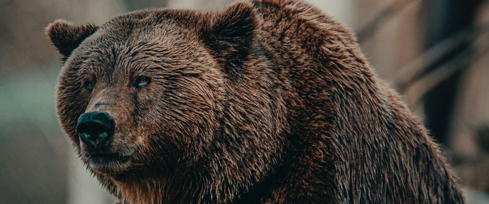

Медведи в Family Zoo
Медведь
Сравнительно с остальными семействами отряда хищных, медведи отличаются наибольшим однообразием внешнего вида, размеров, многих особенностей внутреннего строения. Это самые крупные из современных наземных хищных зверей. Белые медведи достигают длины тела 3 метра при массе до 725 и даже 890 кг; малайский медведь — самый мелкий представитель медвежьих: в длину он не превышает 1,5 метров, высота в холке составляет всего 50—70 см; масса — 27—65 кг. Самцы на 10—20 % крупнее самок. У белых медведей разница самцов и самок в размерах и весе достигает 1,5—2 раза. Мех с развитым подшёрстком, довольно грубый. Волосяной покров высокий, иногда косматый; у большинства видов густой, у малайского медведя — низкий и редкий. Сезонный диморфизм выражается в изменении высоты и густоты меха. Окраска по сезонам не меняется, у большинства видов – однотонная, от угольно-чёрной до беловатой, у некоторых видов имеет место индивидуальная и географическая изменчивость окраски, у чисто бурых медведей на груди или вокруг глаз бывают более светлые отметины, пердположительно, это атавистическая окраска от первопредка медвежьих. Есть два образца специфической окраски – у большой панды она наиболее контрастная, чёрно-белая; у полярного медведя волос почти прозрачный, пустотный, и при различном направлении света получает окрас от белоснежного до золотистого (при определённых медицинских обстоятельствах может принимать даже фиолетовый оттенок).